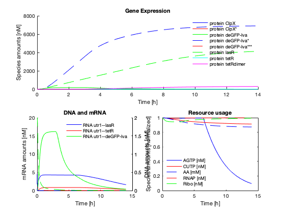
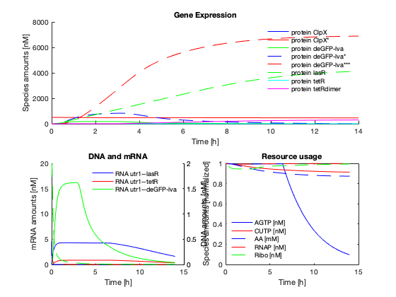
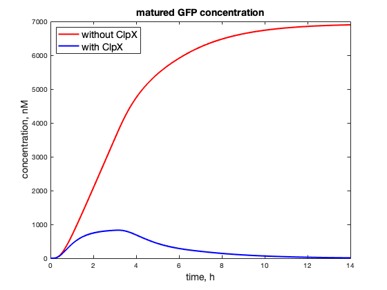

Tutorial IV
In this tutorial, we will discuss a few different circuits.
Contents
- Initializing the toolbox
- Constitutive expression with linear DNA
- Constitutive expression with linear RNA, and protection from endonucleases.
- The incoherent feedforward loop
- The incoherent feedforward loop with ClpX mediated degradation
- Plot the deGFP trajectories for the with- and without- ClpX cases
- The Incoherent Feedforward loop
- linear DNA degradation example. -- recBCD, gamS. Zach paper.
- ClpX degradation example. (from tech report)
- activator example + inducer (use our characterization)
- combinatorial promoter example + inducers. (use our characterization) #repressor example (use our characterization, and lacI too, find a characterization of lacI in TXTL/ or just relative to tetR.)
- rbs varying example (use the mutalik paper to estimate the RBSs)
- constitutive promoter example (use the anderson promoter library to
- estimate promoter strength )
- genetic toggle with the data collected. (anushka, enrique)
- Can look at the TXTL2.0 paper for possible data. maybe wan to split this into multiple smaller links? No need. just have a contents page.
Initializing the toolbox
txtl_init;
Constitutive expression with linear DNA
Constitutive expression with linear RNA, and protection from endonucleases.
The incoherent feedforward loop
tube1 = txtl_extract('E3'); tube2 = txtl_buffer('E3'); % Now set up a tube that will contain our DNA tube3 = txtl_newtube('lastetIFFL'); % Define the DNA strands, and all the relevant reactions txtl_add_dna(tube3, ... 'plac(50)', 'utr1(20)', 'lasR(1000)', .5, 'plasmid'); txtl_add_dna(tube3, ... 'plas(50)', 'utr1(20)', 'tetR(1000)', 0.1, 'plasmid'); txtl_add_dna(tube3, ... 'plas_ptet(50)', 'utr1(20)', 'deGFP(1000)-lva', 2, 'plasmid'); % Mix the contents of the individual tubes Mobj = txtl_combine([tube1, tube2, tube3]); txtl_addspecies(Mobj, 'OC12HSL', 500); txtl_addspecies(Mobj, 'aTc', 200); txtl_addspecies(Mobj, 'protein ClpX*', 0) [simData_no_clpx] = txtl_runsim(Mobj,14*60*60); txtl_plot(simData_no_clpx,Mobj); gfp_index_no_clpx = findspecies(Mobj, 'protein deGFP-lva*');
SimBiology Species Array Index: Compartment: Name: InitialAmount: InitialAmountUnits: 1 contents protein ClpX* 0 Current plot held
The incoherent feedforward loop with ClpX mediated degradation
close all tube1 = txtl_extract('E3'); tube2 = txtl_buffer('E3'); % Now set up a tube that will contain our DNA tube3 = txtl_newtube('lastetIFFL'); % Define the DNA strands, and all the relevant reactions txtl_add_dna(tube3, ... 'plac(50)', 'utr1(20)', 'lasR(1000)', 0.5, 'plasmid'); txtl_add_dna(tube3, ... 'plas(50)', 'utr1(20)', 'tetR(1000)', 0.1, 'plasmid'); txtl_add_dna(tube3, ... 'plas_ptet(50)', 'utr1(20)', 'deGFP(1000)-lva', 2, 'plasmid'); % Mix the contents of the individual tubes Mobj = txtl_combine([tube1, tube2, tube3]); txtl_addspecies(Mobj, 'OC12HSL', 500); txtl_addspecies(Mobj, 'aTc', 200); txtl_addspecies(Mobj, 'protein ClpX*', 500) [simData_with_clpx] = txtl_runsim(Mobj,14*60*60); txtl_plot(simData_with_clpx,Mobj); gfp_index_with_clpx = findspecies(Mobj, 'protein deGFP-lva*');
SimBiology Species Array Index: Compartment: Name: InitialAmount: InitialAmountUnits: 1 contents protein ClpX* 500 Current plot held
Plot the deGFP trajectories for the with- and without- ClpX cases
figure withoutclpx = plot(simData_no_clpx.Time/3600, ... simData_no_clpx.data(:,gfp_index_no_clpx), ... 'LineWidth', 2, 'Color', 'r'); hold on withclpx = plot(simData_with_clpx.Time/3600, ... simData_with_clpx.data(:,gfp_index_with_clpx), ... 'LineWidth', 2, 'Color', 'b'); title('matured GFP concentration',... 'FontSize', 14) ylabel('concentration, nM',... 'FontSize', 14) xlabel('time, h',... 'FontSize', 14) legend([withoutclpx, withclpx], {'without ClpX', 'with ClpX'},... 'FontSize', 14, 'Location', 'NorthWest') curraxis = axis; axis([curraxis(1:2) 0 curraxis(4)])
The Incoherent Feedforward loop
Set up the standard TXTL tubes These load up the RNAP, Ribosome and degradation enzyme concentrations ``E2'' refers to a configuration file